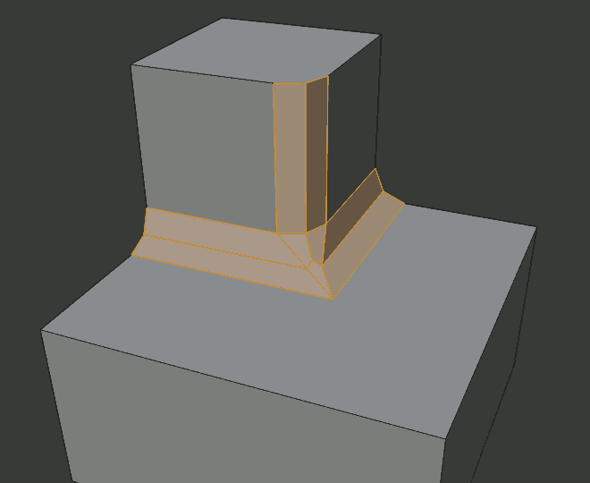

Bevel Modifier¶
The Bevel modifier bevels the edges of the mesh it is applied to, with some control of how and where the bevel is applied to the mesh.
It is a non-destructive alternative to the Bevel Operation in Edit Mode.

Not beveled. |

Beveled. |
Options¶
The Bevel modifier.
- Width
The size of the bevel effect. See Width Method below.

Three Cubes with 0.1, 0.3 and 0.5 bevel widths.
- Segments
- The number of edge loops added along the bevel’s face.
- Profile
- The shape of the bevel, from concave to convex. It has no effect if Segments is less than 2.
- Material
- The index of the material slot to use for the bevel. When set to -1, the material of the nearest original face will be used.
- Only Vertices
When enabled, only the areas near vertices are beveled, the edges remain unchanged.

Three cubes with 0.1, 0.3 and 0.5 bevel widths, with Only Vertices option enabled.
- Clamp Overlap
- Limits the width of each beveled edge so that edges cannot cause overlapping intersections with other geometry.
- Loop Slide
- If there are unbeveled edges along with beveled edges into a vertex, the bevel tries to slide along those edges when possible. Turning the option off can lead to more even bevel widths.
- Mark Seams
- If a seam edge crosses a non-seam one and you bevel all of them, this option will maintain the expected propagation of seams.
- Mark Sharp
- Similar to Mark Seams, but for sharp edges.
- Harden Normals
- When enabled, the per-vertex face normals of the bevel faces are adjusted to match the surrounding faces, and the normals of the surrounding faces are not affected. This will keep the surrounding faces flat (if they were before), with the bevel faces shading smoothly into them. For this effect to work, you need custom normals data, which requires Auto Smooth option to be enabled (see Normals).
- Limit Method
Used to control where a bevel is applied to the mesh.
- None
- No limit, all edges will be beveled.
- Angle
- Only edges where the adjacent faces form an angle smaller than the defined threshold will be beveled. Intended to allow you to bevel only the sharp edges of an object without affecting its smooth surfaces.
- Weight
- Use each edge’s bevel weight to determine the width of the bevel. When the bevel weight is 0.0, no bevel is applied. See here about adjusting bevel weights.
- Vertex Group
- Use weights from a vertex group to determine the width of the bevel. When the vertex weight is 0.0, no bevel is applied. An edge is only beveled if both of its vertices are in the vertex group. See here about adjusting vertex group weights.
- Width Method
Declares how Width will be interpreted to determine the amount of bevel.

Width methods.
- Offset
- Value is interpreted as the distance from the original edge to the edge of the beveled face.
- Width
- Value is interpreted as the distance between the two new edges formed by the bevel.
- Depth
- Value is the perpendicular distance from the new bevel face to original edge.
- Percent
- Similar to Offset but the value is interpreted as a percentage of the adjacent edge length.
- Set Face Strength Mode
Set Face Strength on the faces involved in the bevel, according to the mode specified here. This can be used in conjunction with a following Weighted Normals modifier (with the Face Influence option checked).
- None
- Do not set face strength.
- New
- Set the face strength of new faces along edges to Medium, and the face strength of new faces at vertices to Weak.
- Affected
- In addition to those set for the New case, also set the faces adjacent to new faces to have strength Strong.
- All
- In addition to those set for the Affected case, also set all the rest of the faces of the model to have strength Strong.
- Miter Patterns
A miter is formed when two beveled edges meet at an angle. On the side where the angle is greater than 180 degrees, if any, it is called an outer miter. If it is less than 180 degrees, then it is called an inner miter. The outer and inner miters can each be set to one of these patterns:
- Sharp
- Edges meet at a sharp point, with no extra vertices introduced on the edges.
- Patch
Edges meet at a sharp point but in addition, two extra vertices are introduced near the point so that the edges and faces at the vertex may be less pinched together than what occurs in the Sharp case. This pattern does makes no sense for inner miters, so it behaves like Arc for them.
The Spread slider controls how far the new vertices are from the meeting point.
- Arc
Two vertices are introduced near the meeting point, and a curved arc joins them together.
The Spread slider controls how far the new vertices are from the meeting point.
The Profile slider controls the shape of the arc.
Diagrams of the miter patterns.¶ Sharp outer miter.

Patch outer miter.

Arc outer miter.

Sharp inner miter.
Arc inner miter.
- Spread
- The value used to spread extra vertices apart for non-sharp miters.